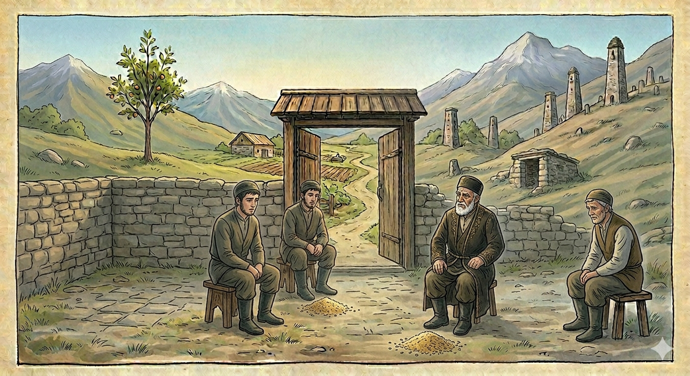

И.А. Дахкильгов. Хьехаме дувцарш - поучительные рассказы-притчи.
И.А. Дахкильгов. Хьехаме дувцарш - поучительные рассказы-притчи. Из ингушского фольклора.

ГӀадж Ӏойилла езаш хиннай
Шоай къаьда мел нийса кхел еш ва хьажа дага волаш, из волча вахав ши новкъост. Шоайла хьалхе а барт а баь, аьннад цар къаьдага: - Къаьда, наьха говра чураяьккхай оаха, къа да тхох хьаьрча. Фу дича, из къа тӀерадаргдар тхона? - Сага дегӀала йола гӀадж ураоттаяь, из къайлаяьккхалца дола кӀа сагӀийна дала деза оаш имамашта, моллашта, кхелахошта. - Тхо шиъ хилар совгӀа, кхоалагӀа хьа веший-воӀ СапарӀал а хиннавар тхоца. Из а вий тхоца дакъа волаш? Къаьда аьннад: - Из а ва шуца гӀод такха дезаш. Бакъда, из жай кӀезига нийса кхетадаь хиннадац аз. Из шуга ураоттае еза аз яха гӀадж Ӏойилла езаш хиннай шоана.
РУССКИЙ
Палку надо было положить
Двое решили проверить, наколько правильно сеьский кадий - судья - решает дела. Пришли они к нему и сказали: - Кадий, мы украли коня. Как нам откупиться от этого греха? - Возьмите палку с человеческий рост, поставьте ее вверх и насыпьте на нее зерна столько, чтобы палка скрылась полностью. Это зерно милостыней раздайте имамам, муллам и кадиям. - Мы забыли тебе сказать, что с нами был твой племянник Сапарали. Должен ли и он принять участие в насыпке зерна? - Да, и он обязан откупиться. Но я несколько ошибся, читая судебник. Палку, о которой я вам говорил, не надо ставить вверх. Ее достаточно положить на пол и засыпать зерном.
ENGLISH
You should have put the stick down
Two men decided to test how fairly the village qadi - the judge - settled cases. They went to him and said: 'Qadi, we have stolen a horse. How can we atone for this sin?' 'Take a stick as tall as a man, stand it upright, and pile grain on top of it until the stick is completely hidden. Distribute this grain as alms to the imams, mullahs and qadis.' 'We forgot to tell you that your nephew, Saparali, was with us. Must he also take part in piling up the grain?' 'Yes, and he must atone as well. But I made a slight mistake whilst reading the law code. The pole I spoke of need not be stood upright. It is enough to lay it on the floor and cover it with grain.'
НОХЧИЙН
ГӀаж охьайилла йезаш йара
Шай къеда мел нийса кхел йеш ву хьажа дагахь волуш, иза волча вахна ши накъост. Шаьш хьалххе барт а бина, аьлла цара къедега: - Къеда, нехан говр чуьрайаьккхина оха, къа тхох хьаьрчина. ХӀун дича, иза къа тӀерадера дар тхуна? - Стеган дегӀал йолу гӀаж ирахӀоттийна, иза къайлайаьккхалца долу кӀа сагӀийна дала деза аш имамашна, моллашна, кхелахошна. - Тхой шиъ хилар совнаха, кхоалгӀа хьан веший-воӀ СапарӀал а хилла вар тхоьца. Иза а вуй тхоьца дакъа волуш? Къедас аьлла: - Иза а ву шуьца гӀуда такха дезаш. Бакъду, иза жайнах жимма нийса кхетадина хилла дац ас. Иза шуьга ирахӀоттайе йеза ас боху гӀаж охьайилла йезаш хилла шуна.
ПОГОВОРКИ
Аьннача доаца дош – бӀеха мух. Слово, которое не сдерживают, – ветры. A word not kept is nothing but foul wind. Аьллача доцу дош – боьха мох.Зунгата бӀаргаш, бӀехала когаш, молла денна сагӀа дайна саг вац. Никто не видел глаз муравья, ног змеи и подаяния муллы. No one has ever seen an ant's eyes, a snake's legs, or a mullah's charity. Зингатан бӀаьргаш, лаьхьан когаш, моллас делла сагӀа дайна стаг вац.Кхаанга хьежжа хул судахочун кхел. Решение судьи зависит от взятки. A judge's verdict depends on the bribe. Кхаане хьаьжжина хуьлу судахочун кхел.Кхело байнаб аьнна бӀарг са гуш хинаб. Глаз, местным судом объявленный незрячим, оказался видящим. An eye declared blind by the local court turned out to see just fine. Кхело байна аьлла бӀаьрг са гуш хилла.Лаьттах дӀадийначох пайда боал, декхара денначох дехке воал. Кинул в землю зерно – получил пользу, дал деньги в долг – пожалел. Sow grain in the earth and you profit; lend money and you'll come to regret it. Лаьттах дӀадийначух пайда болу, декхаран деллачух дохко волу.Мезий кхакхага дода, ахча ахчанка дода. Вши идут к овчине, деньги идут к деньгам. Lice go to the sheepskin; money goes to money. Мезий кхакхане доьду, ахча ахчане доьду.Молла сагӀа делча, йилбазо (шайтӀо) зурма лекхай. Иблис (шайтан) сыграл на зурне, когда мулла совершил подаяние. The devil himself played the zurna when the mullah gave alms. Моллас сагӀа делча, йилбазо (шайтӀано) зурма лекхна.Хьай дош дувцаш бола кхелахой дикагӀа кхаба. Судей, ведущих твое дело, корми получше. Feed the judges handling your case especially well. Хьан дов дуьйцуш болу кхелохой диках кхаба.Хьакхий хурск яа дог эттача молла яьхад: “Ӏа “виззагӀ” яхе а, да налца воаллалва са, хьо лийга бухьига-м еце”. Задумал мулла съесть поросенка и говорит ему: “Хоть ты и визжишь, да будет мой отец лежать в могиле с кабаном, если ты не детеныш лани”. Wanting to eat the piglet, the mullah said to it: "Squeal all you like, may my father lie in the grave next to a boar, if you're not a fawn." Хьакхан хуьрсик йаа дог деанчу моллас баьхна: "Ахь "виззагӀ" бахахь а, да налца валлийла сан, хьо лунан буьхиг-м йацахь".Хьал дола вир тхов тӀа даьннад. Богатый ишак и на крышу взберется. A wealthy man's donkey can even climb onto a roof. Хьал долу вир тхов тӀе йаьлла.Шийна хӀама елча, молла жӀалена а даьккхад жай. За плату мулла даже для собаки изготовил талисман. For a fee, the mullah even made a charm for a dog. Шена хӀума йелча, моллас жӀаьлина а даьккхина жайна.